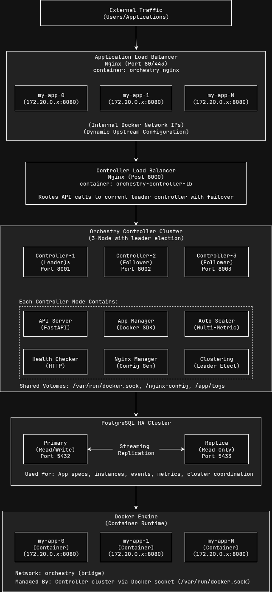

Architecture Overview¶
Understanding Orchestry's system design, components, and architectural decisions.
System Architecture¶
Orchestry follows a microservices architecture with clear separation of concerns. The system is designed to be scalable, resilient, and easy to maintain.

Core Components¶
1. API Server (FastAPI)¶
Purpose: Provides REST API endpoints for external interaction
Key Responsibilities: - Accept API requests for application management - Validate input specifications - Coordinate with other components - Return structured responses - Handle authentication and authorization (future)
Technology: FastAPI with uvicorn ASGI server
Key Files:
- controller/api.py - Main API endpoints
- controller/main.py - Application entry point
2. Application Manager¶
Purpose: Manages the lifecycle of containerized applications
Key Responsibilities: - Register applications from specifications - Create and destroy Docker containers - Monitor container health and status - Handle container networking - Manage application scaling
Technology: Docker Python SDK
Key Files:
- controller/manager.py - Core application management logic
- app_spec/models.py - Application specification models
Key Operations:
# Register a new application
app_manager.register_app(app_spec)
# Start application with desired replicas
app_manager.start_app(app_name, replicas=3)
# Scale application
app_manager.scale_app(app_name, target_replicas=5)
# Stop application
app_manager.stop_app(app_name)
3. Auto Scaler¶
Purpose: Makes intelligent scaling decisions based on metrics
Key Responsibilities: - Collect application metrics (CPU, memory, RPS, latency) - Analyze metrics against scaling policies - Make scale-out/scale-in decisions - Implement cooldown periods - Track scaling history and decisions
Technology: Custom scaling algorithm with pluggable metrics
Key Files:
- controller/scaler.py - Auto-scaling logic and policies
4. Health Checker¶
Purpose: Monitors application health and availability
Key Responsibilities: - Perform periodic health checks on containers - Support HTTP and TCP health checks - Track health status and failure counts - Trigger container replacement on failures - Update load balancer configuration
Technology: Async HTTP client (aiohttp) and TCP sockets
Key Files:
- controller/health.py - Health checking logic
Health Check Types: - HTTP: GET/POST requests to health endpoints - TCP: Socket connections to specified ports - Custom: Application-specific health logic
5. Distributed Controller (Leader Election)¶
Purpose: Eliminates single point of failure through distributed controller architecture
Key Responsibilities: - Coordinate leadership election among multiple controller nodes - Ensure only one active leader manages applications at a time - Handle automatic failover when leader becomes unavailable - Maintain cluster membership and health monitoring - Provide seamless leadership handoff
Technology: PostgreSQL-based leader election with lease system
Key Files:
- controller/cluster.py - Distributed controller and leader election logic
- controller/api.py - Leader-aware API decorators and routing
Key Features: - 3-Node Cluster: Production-ready high availability setup - Automatic Failover: 15-30 second failover on leader failure - Split-Brain Prevention: Database-based coordination prevents conflicts - Load Balancer Integration: Nginx routes write operations to leader only - Health Monitoring: Continuous node health and lease management
API Integration:
@leader_required
async def register_app(app_spec: AppSpec):
# Only leader can execute write operations
return await app_manager.register_app(app_spec.dict())
See Leader Election Guide for detailed implementation.
6. Nginx Manager¶
Purpose: Manages dynamic load balancer configuration
Key Responsibilities: - Generate Nginx upstream configurations - Update configurations when containers change - Reload Nginx without downtime - Handle SSL/TLS termination - Route traffic based on application specifications
Technology: Nginx with dynamic configuration generation
Key Files:
- controller/nginx.py - Nginx configuration management
- configs/nginx/ - Nginx templates and configurations
Configuration Generation:
def generate_upstream_config(app_name, instances):
config = f"""
upstream {app_name} {{
{upstream_method};
keepalive 32;
"""
for instance in healthy_instances:
config += f" server {instance.ip}:{instance.port};\n"
config += "}\n"
return config
6. State Manager¶
Purpose: Provides persistent state storage and management
Key Responsibilities: - Store application specifications and status - Track container instances and health - Maintain scaling policies and history - Provide event audit trail - Handle database connections and transactions
Technology: PostgreSQL with connection pooling
Key Files:
- state/db.py - Database abstraction layer
Data Models: - Applications: Specifications, status, scaling policies - Instances: Container details, health status, metrics - Events: System events, scaling decisions, errors - Metrics: Historical performance data
7. Metrics Collector¶
Purpose: Collects and aggregates application metrics
Key Responsibilities: - Gather container resource metrics - Collect application-specific metrics - Calculate derived metrics (RPS, latency percentiles) - Store time-series data - Expose metrics for monitoring systems
Technology: Docker stats API, Prometheus exposition
Key Files:
- metrics/exporter.py - Metrics collection and export
Data Flow¶
Application Deployment Flow¶
1. User submits app spec → API Server
2. API Server validates spec → App Manager
3. App Manager stores spec → State Manager → Database
4. App Manager creates containers → Docker Engine
5. Health Checker starts monitoring → Containers
6. Nginx Manager updates config → Load Balancer
7. Auto Scaler starts monitoring → Metrics Collector
Scaling Decision Flow¶
1. Metrics Collector gathers data → Containers
2. Auto Scaler analyzes metrics → Scaling Policy
3. Scaling decision made → App Manager
4. App Manager adjusts containers → Docker Engine
5. Health Checker updates status → Nginx Manager
6. Nginx Manager reloads config → Load Balancer
7. Event logged → State Manager → Database
Request Handling Flow¶
1. External request → Nginx Load Balancer
2. Nginx routes to healthy container → Application Container
3. Container processes request → Response
4. Metrics collected → Metrics Collector
5. Health status updated → Health Checker
Database Schema¶
Core Tables¶
-- Applications table
CREATE TABLE applications (
name VARCHAR(253) PRIMARY KEY,
spec JSONB NOT NULL,
status VARCHAR(50) NOT NULL,
created_at TIMESTAMP WITH TIME ZONE DEFAULT NOW(),
updated_at TIMESTAMP WITH TIME ZONE DEFAULT NOW(),
replicas INTEGER DEFAULT 0,
last_scaled_at TIMESTAMP WITH TIME ZONE,
mode VARCHAR(20) DEFAULT 'auto'
);
-- Container instances
CREATE TABLE instances (
id SERIAL PRIMARY KEY,
app_name VARCHAR(253) NOT NULL REFERENCES applications(name),
container_id VARCHAR(128) UNIQUE NOT NULL,
ip INET NOT NULL,
port INTEGER NOT NULL,
status VARCHAR(50) NOT NULL,
created_at TIMESTAMP WITH TIME ZONE DEFAULT NOW(),
updated_at TIMESTAMP WITH TIME ZONE DEFAULT NOW(),
failure_count INTEGER DEFAULT 0,
last_health_check TIMESTAMP WITH TIME ZONE
);
-- System events
CREATE TABLE events (
id SERIAL PRIMARY KEY,
app_name VARCHAR(253) REFERENCES applications(name),
event_type VARCHAR(50) NOT NULL,
message TEXT NOT NULL,
timestamp TIMESTAMP WITH TIME ZONE DEFAULT NOW(),
details JSONB
);
-- Metrics (time-series data)
CREATE TABLE metrics (
id SERIAL PRIMARY KEY,
app_name VARCHAR(253) NOT NULL REFERENCES applications(name),
timestamp TIMESTAMP WITH TIME ZONE DEFAULT NOW(),
cpu_percent REAL,
memory_percent REAL,
rps REAL,
latency_p95_ms REAL,
active_connections INTEGER,
replicas INTEGER
);
Indexes for Performance¶
-- Query optimization indexes
CREATE INDEX idx_instances_app_name ON instances(app_name);
CREATE INDEX idx_instances_status ON instances(status);
CREATE INDEX idx_events_app_name_timestamp ON events(app_name, timestamp DESC);
CREATE INDEX idx_events_type_timestamp ON events(event_type, timestamp DESC);
CREATE INDEX idx_metrics_app_timestamp ON metrics(app_name, timestamp DESC);
Configuration Architecture¶
Hierarchical Configuration¶
Configuration is loaded in priority order:
- Default values (hardcoded)
- Configuration files (
config.yaml) - Environment variables (
.env, system env) - Runtime parameters (API calls)
Configuration Sources¶
class ConfigManager:
def load_config(self):
config = {}
# 1. Load defaults
config.update(DEFAULT_CONFIG)
# 2. Load from files
if os.path.exists('config.yaml'):
config.update(load_yaml('config.yaml'))
# 3. Load from environment
config.update(load_env_config())
# 4. Validate and return
return validate_config(config)
Error Handling Strategy¶
Error Categories¶
- Validation Errors: Invalid input specifications
- Resource Errors: Insufficient system resources
- Infrastructure Errors: Docker daemon, database issues
- Application Errors: Container startup failures
- Network Errors: Load balancer configuration issues
Error Recovery¶
class ErrorHandler:
async def handle_container_failure(self, container_id, error):
# 1. Log the error
await self.log_event('container_failure', container_id, error)
# 2. Attempt recovery
if self.should_restart(error):
await self.restart_container(container_id)
else:
await self.replace_container(container_id)
# 3. Update load balancer
await self.update_nginx_config()
Security Architecture¶
Network Security¶
- Container Isolation: Dedicated Docker network
- Traffic Encryption: TLS termination at load balancer
- Internal Communication: Encrypted inter-service communication
- Firewall Rules: Restrict network access
Access Control¶
- API Authentication: JWT-based authentication (future)
- Role-Based Access: RBAC for different user types (future)
- Audit Logging: Complete audit trail of all operations
Container Security¶
- Image Scanning: Vulnerability scanning of container images
- Runtime Security: Container runtime protection
- Resource Limits: CPU and memory constraints
- Non-Root Execution: Containers run as non-root users
Monitoring Architecture¶
Metrics Collection¶
class MetricsCollector:
async def collect_app_metrics(self, app_name):
instances = await self.get_app_instances(app_name)
metrics = {
'cpu_percent': await self.get_cpu_usage(instances),
'memory_percent': await self.get_memory_usage(instances),
'rps': await self.calculate_rps(app_name),
'latency_p95': await self.get_latency_percentile(app_name, 95),
'active_connections': await self.get_connection_count(instances)
}
await self.store_metrics(app_name, metrics)
return metrics
Observability Stack¶
- Metrics: Prometheus + Grafana (future)
- Logs: Structured JSON logging
- Tracing: OpenTelemetry integration (future)
- Alerting: AlertManager integration (future)
Performance Considerations¶
Database Performance¶
- Connection Pooling: Efficient database connection management
- Query Optimization: Indexed queries and efficient joins
- Read Replicas: Separate read/write workloads
- Archival Strategy: Historical data management
Scaling Performance¶
- Concurrent Operations: Parallel scaling operations
- Batch Processing: Bulk container operations
- Caching: Metrics and configuration caching
- Async Processing: Non-blocking operations
Memory Management¶
- Connection Pools: Bounded connection pools
- Metrics Retention: Time-based data cleanup
- Container Limits: Per-container resource limits
- Garbage Collection: Periodic cleanup tasks
Next Steps: Explore Core Components for detailed implementation details.